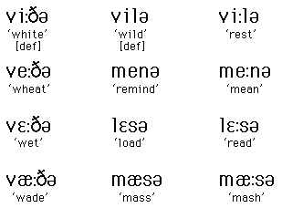
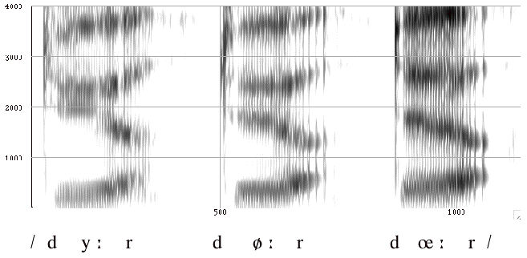

Contents page
Chapter 9 contents page
Chapter 10 contents page

Danish front rounded vowels

The transcription is phonemic. Note that Danish /d/ is a voiceless slightly aspirated stop and /r/ is realized as a pharyngeal approximant. (Click on the spectrogram to hear the sound.